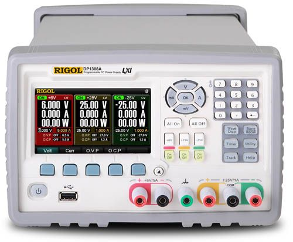
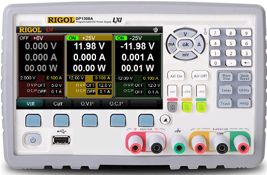

|  |
DP1308A is a high-performance 80W 3-output programmable linear DC power supply. It has excellent features including timed outputs and tracking capabilities; extremely clean ripple and noise, comprehensive over-voltage, over current, over-temperature protection, a large and clear user interface, super performance specifications,and multiple standard interfaces. The DP1308A meets the requirements of various forms desktop and integrated system testing. DP1308A widely is widely used in research and development, education, industrial control, mobile communication, and product testing, etc. |
How to use Digital Digital Power Supply
